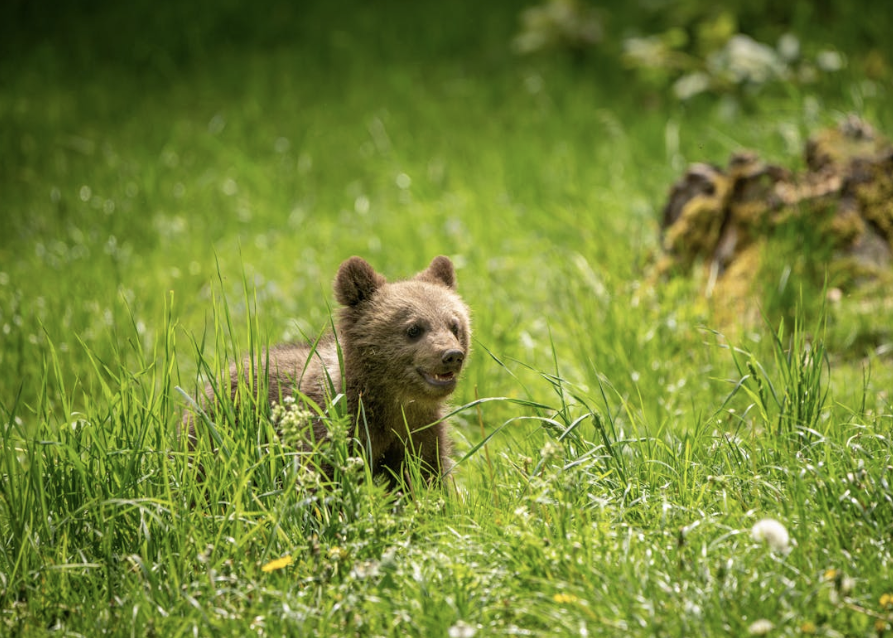
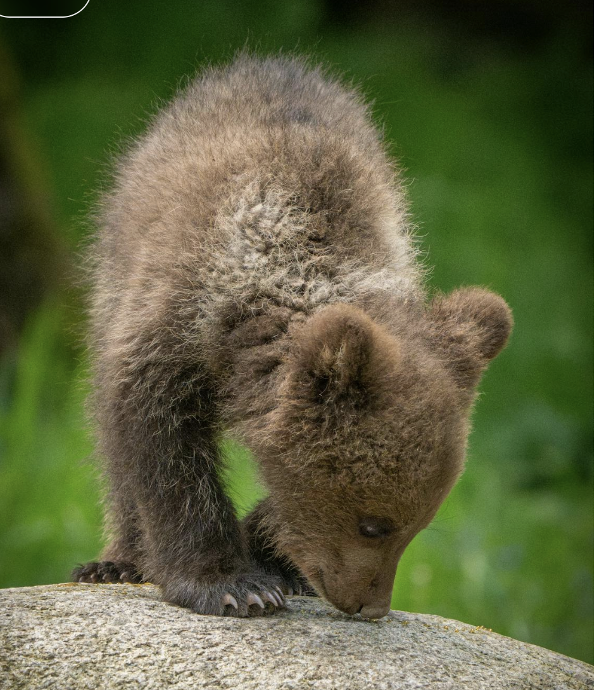
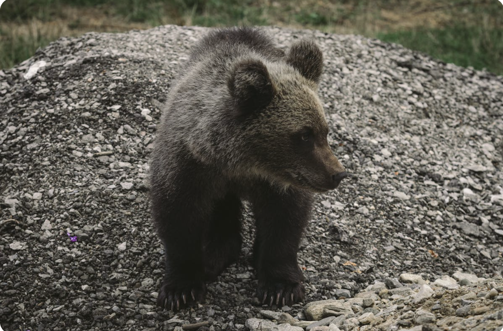
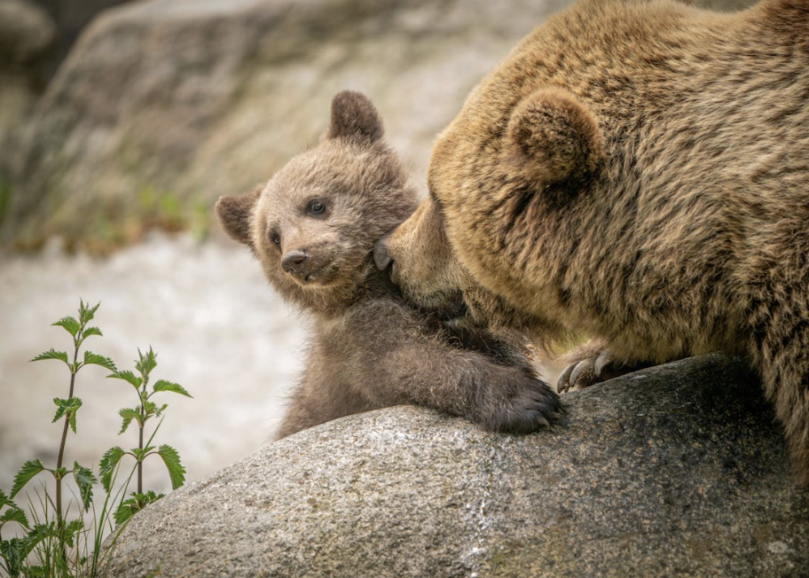

Here's a gentle, six-year-oldfriendly story told in 5 clear sections, with simple language, warm themes, and a strong focus on community and small actions mattering.
1. Meet Little Bear

In a cozy forest near a wide blue river lived a little bear named Milo.
Milo was the smallest in his bear family. His paws were tiny, and his roar sounded more like a squeak.
Sometimes Milo wondered,
“Can I really help? I'm so small.”
Mama Bear hugged him and said,
“Every bear matters in our community.”
Milo wasn't sure what that meant yet.
2. The Busy Bear Community

One morning, Milo walked through the forest village with his family.
He saw:
Baker Bear sharing honey bread
Builder Bear fixing a broken bridge
Grandma Bear telling stories to the cubs
Everyone had something to do.
Milo watched and thought,
“I can't bake or build like them.”
He felt a little too small.
3. A Problem in the Forest

That afternoon, dark clouds rolled in.
Rain poured down, and the river grew fast and loud.
Twigs and leaves blocked the path to the berry patch.
The bigger bears tried to move them, but the path was too narrow.
Milo noticed something important.
His small paws could fit where the others couldn't.
4. Little Bear Helps

Milo squeezed through the tight path and gently moved the twigs away.
He called out directions so the other bears knew where to step.
Soon, the path was clear again!
The bears cheered.
Papa Bear smiled and said,
“Your small size helped our whole community.”
Milo felt warm and proud inside.
5. Everyone Matters
That night, the bear family shared berries under the stars.
Milo finally understood.
Community means helping each other, big or small.
He whispered,
“I'm part of this.”
Mama Bear smiled and said,
“And you always will be.”
Milo fell asleep knowing that even a little bear can make a big difference.